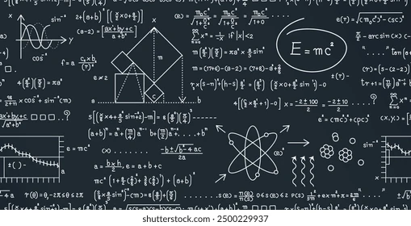

<!-- curso-detalle.component.html -->

<ion-header>
  <ion-toolbar color="primary">
    <ion-buttons slot="start">
      <ion-back-button defaultHref="/estudiante/cursos"></ion-back-button>
    </ion-buttons>
    <ion-title>{{ course.title }}</ion-title>
  </ion-toolbar>
</ion-header>

<ion-content class="ion-padding">
  <ion-card class="course-header">
    
    <ion-card-header>
      <ion-card-title>{{ course.title }}</ion-card-title>
      <ion-card-subtitle>{{ course.teacher }}</ion-card-subtitle>
    </ion-card-header>

    <ion-card-content>
      <p>{{ course.description }}</p>

      <ion-item lines="none">
        <ion-icon slot="start" name="time-outline"></ion-icon>
        <ion-label>{{ course.schedule }}</ion-label>
      </ion-item>

      <div class="progress-summary">
        <h3>Progreso del curso</h3>
        <ion-progress-bar [value]="course.progress / 100"></ion-progress-bar>
        <span>{{ course.progress }}% completado</span>
      </div>
    </ion-card-content>
  </ion-card>

  <ion-list>
    <ion-list-header>
      <ion-label>Módulos del curso</ion-label>
    </ion-list-header>

    <ion-item *ngFor="let module of course.modules"
              detail="true"
              [routerLink]="['/estudiante/modulo', module.id]"
              [class.completed]="module.completed">
      <ion-icon slot="start"
                [name]="module.completed ? 'checkmark-circle' : 'ellipse-outline'"
                [color]="module.completed ? 'success' : 'medium'"></ion-icon>

      <ion-label>
        <h2>{{ module.title }}</h2>
        <p>{{ module.description }}</p>
        <div class="module-progress">
          <ion-progress-bar [value]="calculateModuleProgress(module) / 100"></ion-progress-bar>
          <span>{{ module.completedActivities }} de {{ module.activities }} actividades</span>
        </div>
      </ion-label>
    </ion-item>
  </ion-list>
</ion-content>
